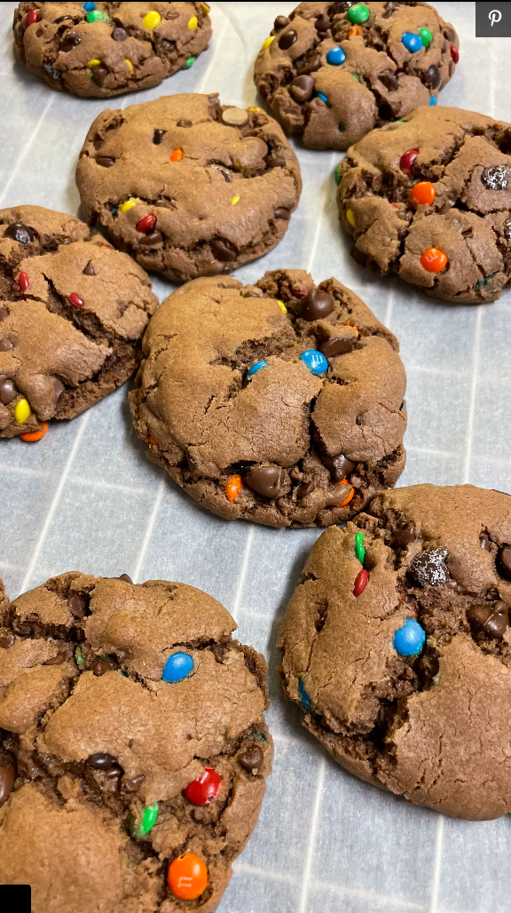

Chocolate Chip Cookies for the soul

Complete any meal while hitting you sweet tooth by
having some delicious chocolate chip cookies
Recipe by dawnethan
Ingredients
- 2 teaspoons baking soda
- 1 ½ cups brown sugar
- ⅔ cup chocolate-hazelnut spread (such as Nutella®)
- ½ cup butter, softened
- ½ cup white sugar
- 2 eggs
- 1 ½ teaspoons vanilla extract
- 2 cups milk chocolate chips
- ½ cup rainbow chocolate chips
Directions
- Preheat the oven to 350 degrees F (175 degrees C).
Grease 2 cookie sheets or line with parchment paper.
- Whisk both flours and baking soda together in a medium bowl.
- Cream the brown sugar, chocolate-hazelnut spread, butter,
and white sugar in a large bowl with an electric mixer.
Beat in eggs and vanilla.
- Add the flour mixture to the butter mixture; stir until
a stiff dough forms. Mix in chocolate chips and rainbow
chocolate chips.
- Roll dough into 2-inch balls. Place 1 to 2 inches apart
onto the prepared baking sheets.
- Bake in the preheated oven until cookies have risen,
10 to 12 minutes. Cool on the baking sheet for 5 to
10 minutes; cookies will firm up as they cool.
Remove to a wire rack to cool completely.